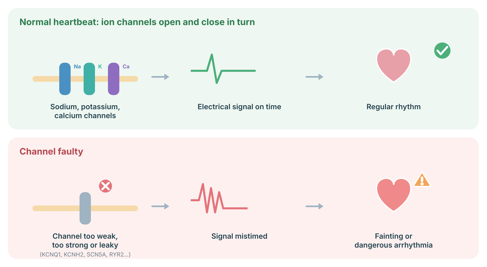
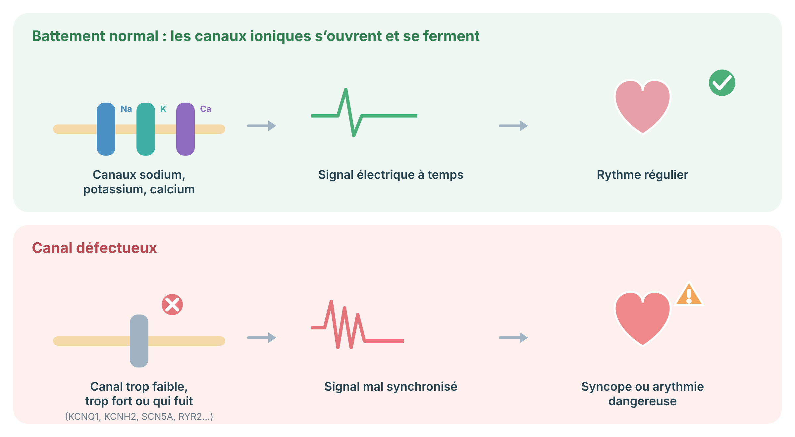

A protocol for CPVT: genetics, exercise-test diagnosis, beta-blocker and flecainide therapy, ICD considerations, activity, and family screening.
Protocole pour la TVPC : génétique, diagnostic par épreuve d'effort, traitement par bêtabloquant et flécaïnide, considérations sur le DCI, activité et dépistage familial.
Catecholaminergic polymorphic ventricular tachycardia (CPVT) is a rare inherited condition in which exercise or strong emotion (when adrenaline rises) can trigger a dangerous fast heart rhythm. The resting ECG and heart structure are usually normal, so it can be missed. It often first shows up in childhood or the teenage years as fainting during sport or excitement. Medicines are very effective when taken every day.
La tachycardie ventriculaire polymorphe catécholaminergique (TVPC) est une maladie héréditaire rare où l'effort ou une forte émotion (lorsque l'adrénaline augmente) peut déclencher un rythme rapide dangereux. L'ECG au repos et la structure du cœur sont habituellement normaux, ce qui peut la faire passer inaperçue. Elle se manifeste souvent dans l'enfance ou l'adolescence par une perte de conscience pendant le sport ou l'excitation. Les médicaments sont très efficaces lorsqu'ils sont pris chaque jour.
CPVT is caused most often by gain-of-function variants in RYR2 (autosomal dominant, frequently de novo), which cause diastolic calcium leak from the sarcoplasmic reticulum. Autosomal recessive forms involve CASQ2 and TRDN; CALM1–3 and TECRL are also implicated. The characteristic finding is bidirectional or polymorphic ventricular ectopy and VT reproducibly induced by exercise or catecholamines.
La TVPC est le plus souvent causée par des variants gain de fonction de RYR2 (autosomique dominante, souvent de novo), qui provoquent une fuite diastolique de calcium du réticulum sarcoplasmique. Les formes autosomiques récessives touchent CASQ2 et TRDN; CALM1–3 et TECRL sont aussi impliqués. La trouvaille caractéristique est une ectopie et une TV ventriculaires bidirectionnelles ou polymorphes, reproductibles à l'effort ou sous catécholamines.
Each heartbeat is an electrical wave created as sodium, calcium and potassium channels in heart-muscle cells open and close in a precise order. Inherited arrhythmia syndromes are caused by changes in these channels or in proteins that handle calcium: in long QT syndrome (e.g. KCNQ1, KCNH2, SCN5A) the heart takes too long to reset; in Brugada syndrome sodium current is reduced (SCN5A); in CPVT calcium leaks from inside stores during exercise (RYR2, CASQ2). The heart may look normal but can develop fainting or dangerous rhythms.

Sources: Schwartz PJ, et al. N Engl J Med 2025;393:2023–34 (PubMed); Dib Nehme R, et al. J Am Heart Assoc 2025;14:e040072 (PubMed).
Chaque battement est une onde électrique créée par l’ouverture et la fermeture, dans un ordre précis, des canaux sodium, calcium et potassium des cellules du muscle cardiaque. Les syndromes d’arythmie héréditaires sont causés par des variations de ces canaux ou de protéines qui gèrent le calcium : dans le syndrome du QT long (p. ex. KCNQ1, KCNH2, SCN5A), le cœur met trop de temps à se réinitialiser; dans le syndrome de Brugada, le courant sodique est réduit (SCN5A); dans la TVPC, le calcium fuit des réserves internes à l’effort (RYR2, CASQ2). Le cœur peut sembler normal, mais des syncopes ou des rythmes dangereux peuvent survenir.

Sources : Schwartz PJ, et al. N Engl J Med 2025;393:2023–34 (PubMed); Dib Nehme R, et al. J Am Heart Assoc 2025;14:e040072 (PubMed).
An exercise stress test is the key test, because it can show the abnormal beats that appear as the heart rate rises. A genetic test helps confirm the diagnosis and allows relatives to be tested.
L'épreuve d'effort est le test clé, car elle peut montrer les battements anormaux qui apparaissent lorsque la fréquence cardiaque augmente. Un test génétique aide à confirmer le diagnostic et permet de tester les apparentés.
A beta-blocker, usually nadolol, is taken every day without missed doses. If abnormal beats continue, a second medicine called flecainide is often added. Some people need a procedure on the heart's nerves or a defibrillator (ICD). Exercise tests are repeated to check how well treatment is working.
Un bêtabloquant, habituellement le nadolol, est pris chaque jour sans oublier de doses. Si les battements anormaux persistent, un second médicament, la flécaïnide, est souvent ajouté. Certaines personnes ont besoin d'une intervention sur les nerfs du cœur ou d'un défibrillateur (DCI). Les épreuves d'effort sont répétées pour vérifier l'efficacité du traitement.
Fainting or palpitations during exercise or emotional stress needs urgent assessment. Relatives and coaches can learn CPR and know where an AED is.
Une perte de conscience ou des palpitations pendant l'effort ou un stress émotionnel exigent une évaluation urgente. Les proches et les entraîneurs peuvent apprendre la RCR et savoir où se trouve un DEA.
Activity plans are made together with your cardiologist, based on how well your rhythm is controlled on exercise testing. Strenuous competitive sport and very stressful situations have traditionally been avoided; recent guidance allows more individual choice in well-controlled patients.
Les plans d'activité sont établis avec votre cardiologue, selon le contrôle du rythme à l'épreuve d'effort. Le sport de compétition intense et les situations très stressantes ont traditionnellement été évités; les recommandations récentes laissent plus de place au choix individuel chez les patients bien contrôlés.
Brothers, sisters, parents, and children should be checked with an exercise test and, if the family gene change is known, a genetic test. In the dominant form each child has a 1 in 2 chance of inheriting it; recessive forms have different risks.
Les frères, sœurs, parents et enfants devraient être évalués par une épreuve d'effort et, si la modification familiale est connue, par un test génétique. Dans la forme dominante, chaque enfant a une chance sur deux d'en hériter; les formes récessives comportent des risques différents.
Original diagrams are the work of the author (© 2026 Dr. Andrew Shuen).
Les schémas originaux sont l'œuvre de l'auteur (© 2026 Dr Andrew Shuen).